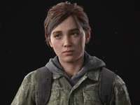
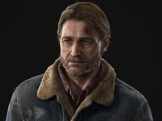
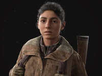
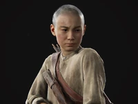

Escolha um personagem
- 
- 
- 
- 
Ellie
Ellie Williams é uma personagem fictícia da franquia de jogos eletrônicos The Last of Us, da Naughty Dog. No primeiro jogo, o personagem Joel é encarregado de acompanhar Ellie em um Estados Unidos pós-apocalíptico, na tentativa de criar uma cura potencial para uma infecção à qual Ellie é imune.